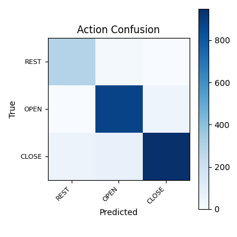

EEG BCI Run Report
Run
- run_dir: Projects/2-M16/subjects/2-M16/sessions/combined_20260319_081200_pruned_rest_events_0_1_2/processed/models/20260403_grouptrial_rest050
- out_dir: Projects/2-M16/subjects/2-M16/sessions/combined_20260319_081200_pruned_rest_events_0_1_2/processed/reports/20260403_grouptrial_rest050
- generated: 2026-04-04T05:36:59.470607+00:00
Artifacts
- metrics: metrics.json
- train_config: train_config.json
- test_predictions: test_predictions.npz
Performance (from predictions)
- Action accuracy: 91.83%
- Action F1 (macro/weighted): 0.913 / 0.918
- Applicability FP(rest) / FN(non-REST): 14.98% / 2.36%
- Action/applicability disagreement: 1.65%
- Raw non-REST+NONE count/rate: 0 / 0.00%
- Committed REST+active count/rate: 0 / 0.00%
- Committed non-REST+NONE count/rate: 0 / 0.00%
- Sent REST+active count/rate: N/A / N/A
- Sent non-REST+NONE count/rate: N/A / N/A
- Deployment pair invariant OK: True
- Joint accuracy (overall/non-REST): 86.66% / 85.41%
- Finger accuracy (non-REST): 88.11%
- Finger F1 (non-REST macro/weighted): 0.738 / 0.891
- Finger accuracy (overall): 89.00%
- Finger F1 (overall macro/weighted): 0.885 / 0.888
- REST TPR: 94.79% | REST FPR: 2.66% | REST Precision: 84.59% | REST F1: 0.894
- Deprecated raw valid/invalid pair rate: 85.05% / 14.95%
- Deprecated raw REST+active count/rate: 344 / 14.95%
Primary Mixed Holdout
- Test windows: 2301
- Action counts: REST(0)=307, OPEN(1)=921, CLOSE(2)=1073
- Finger counts: NONE(0)=307, THUMB(1)=466, INDEX(2)=327, MIDDLE(3)=443, RING(4)=365, PINKY(5)=393
- Action accuracy: 91.83%
- Joint accuracy: 86.66%
- Finger accuracy (non-REST): 88.11%
- REST TPR / Precision: 94.79% / 84.59%
- Applicability FP(rest) / FN(non-REST): 14.98% / 2.36%
- Action/applicability disagreement: 1.65%
- Raw non-REST+NONE rate: 0.00%
- Committed REST+active rate: 0.00%
- Committed non-REST+NONE rate: 0.00%
- Deployment pair invariant OK: True
Auxiliary Quiet-REST Benchmark
- Windows: 1059
- REST events: 8
- Sessions: 2-M16_20260315_145838_01
- Action accuracy: 91.03%
- REST TPR / Precision / F1: 91.03% / 100.00% / 0.953
Core Full-Session Replay
- Windows: 11388
- Sessions: 2-M16_20260216_150056_01, 2-M16_20260317_190134
- Action accuracy: 89.42%
- Joint accuracy: 85.73%
- Finger accuracy (non-REST): 88.33%
- REST TPR / Precision: 87.88% / 74.90%
- Applicability FP(rest) / FN(non-REST): 20.37% / 3.09%
- Action/applicability disagreement: 2.10%
- Raw non-REST+NONE rate: 0.00%
- Committed REST+active rate: 0.00%
- Committed non-REST+NONE rate: 0.00%
- Deployment pair invariant OK: True
Repeated Split Summary
- Seeds: 7, 21, 42, 84, 168
- Action accuracy mean/std: 90.26% / 0.97%
- Joint accuracy mean/std: 86.60% / 0.97%
- Finger accuracy non-REST mean/std: 88.38% / 1.48%
- REST TPR mean/std: 92.98% / 2.11%
- REST precision mean/std: 82.64% / 4.86%
REST Event Breakdown
| Event | Session | Windows | REST TPR | Pred action counts | Pred pair counts | Median p(REST) | Median p(OPEN) | Median p(CLOSE) | Start | End |
|---|
| 0 | 2-M16_20260317_190134 | 100 | 100.00% | REST(0)=100 | {"REST+NONE": 100} | 0.744 | 0.075 | 0.177 | 61.800 | 67.000 |
| 3 | 2-M16_20260317_190134 | 79 | 98.73% | REST(0)=78, CLOSE(2)=1 | {"REST+NONE": 78, "CLOSE+MIDDLE": 1} | 0.671 | 0.114 | 0.210 | 115.300 | 119.850 |
| 5 | 2-M16_20260317_190134 | 88 | 85.23% | REST(0)=75, OPEN(1)=13 | {"REST+NONE": 75, "OPEN+MIDDLE": 9, "OPEN+INDEX": 4} | 0.499 | 0.293 | 0.192 | 165.150 | 170.150 |
| 11 | 2-M16_20260317_190134 | 111 | 91.89% | REST(0)=102, OPEN(1)=9 | {"REST+NONE": 102, "OPEN+INDEX": 6, "OPEN+MIDDLE": 3} | 0.496 | 0.290 | 0.199 | 231.150 | 236.900 |
| 21 | 2-M16_20260317_190134 | 92 | 79.35% | REST(0)=73, OPEN(1)=12, CLOSE(2)=7 | {"REST+NONE": 73, "OPEN+MIDDLE": 11, "CLOSE+RING": 5, "CLOSE+INDEX": 2, "OPEN+INDEX": 1} | 0.471 | 0.213 | 0.254 | 418.400 | 423.550 |
| 22 | 2-M16_20260317_190134 | 135 | 88.15% | REST(0)=119, OPEN(1)=15, CLOSE(2)=1 | {"REST+NONE": 119, "OPEN+MIDDLE": 13, "OPEN+PINKY": 2, "CLOSE+MIDDLE": 1} | 0.525 | 0.235 | 0.227 | 435.550 | 442.500 |
| 28 | 2-M16_20260317_190134 | 115 | 94.78% | REST(0)=109, OPEN(1)=3, CLOSE(2)=3 | {"REST+NONE": 109, "OPEN+MIDDLE": 3, "CLOSE+RING": 2, "CLOSE+INDEX": 1} | 0.614 | 0.183 | 0.181 | 546.650 | 554.050 |
| 29 | 2-M16_20260317_190134 | 132 | 100.00% | REST(0)=132 | {"REST+NONE": 132} | 0.852 | 0.076 | 0.069 | 561.050 | 568.200 |
| 30 | 2-M16_20260317_190134 | 140 | 98.57% | REST(0)=138, OPEN(1)=2 | {"REST+NONE": 138, "OPEN+MIDDLE": 1, "OPEN+PINKY": 1} | 0.629 | 0.200 | 0.160 | 574.900 | 583.100 |
| 31 | 2-M16_20260317_190134 | 148 | 97.30% | REST(0)=144, OPEN(1)=4 | {"REST+NONE": 144, "OPEN+MIDDLE": 4} | 0.691 | 0.141 | 0.151 | 590.200 | 598.900 |
| 577 | 2-M16_20260216_150056_01 | 205 | 54.63% | REST(0)=112, OPEN(1)=79, CLOSE(2)=14 | {"REST+NONE": 112, "OPEN+PINKY": 77, "CLOSE+INDEX": 12, "OPEN+INDEX": 2, "CLOSE+RING": 2} | 0.485 | 0.351 | 0.067 | 3078.400 | 3088.850 |
Per-Finger Non-REST Metrics
| Finger | Correct | Support | Predicted | Accuracy | Precision | Recall | F1 |
|---|
| THUMB | 466 | 466 | 466 | 100.00% | 100.00% | 100.00% | 100.00% |
| INDEX | 313 | 327 | 363 | 95.72% | 86.23% | 95.72% | 90.72% |
| MIDDLE | 380 | 443 | 424 | 85.78% | 89.62% | 85.78% | 87.66% |
| RING | 252 | 365 | 272 | 69.04% | 92.65% | 69.04% | 79.12% |
| PINKY | 346 | 393 | 416 | 88.04% | 83.17% | 88.04% | 85.54% |
Confusion Matrices


metrics.json
{
"schema_version": 1,
"created_utc": "2026-04-04T05:25:16.158773+00:00",
"npz_path": "Projects/2-M16/subjects/2-M16/sessions/combined_20260319_081200_pruned_rest_events_0_1_2/processed/eeg_windows.npz",
"run_dir": "Projects/2-M16/subjects/2-M16/sessions/combined_20260319_081200_pruned_rest_events_0_1_2/processed/models/20260403_grouptrial_rest050",
"train": {
"avg_loss": 0.7438625701035375,
"action_acc": 0.8647540983606558,
"finger_acc": 0.8724133205426888,
"epochs": 60,
"batch_size": 64,
"lr": 0.001,
"seed": 43
},
"temperature_scaling": {
"action_temperature": 1.0,
"finger_temperature": 1.0,
"applicability_temperature": 1.0,
"fit_sample_count": 874,
"fit_non_rest_count": 771,
"has_applicability_temperature": true,
"source": "fit_on_holdout",
"metrics": {
"action": {
"nll_before": 0.4310529828071594,
"nll_after": 0.4310529828071594
},
"finger": {
"nll_before": 0.35804715752601624,
"nll_after": 0.35804715752601624
},
"applicability": {
"nll_before": 0.1862296760082245,
"nll_after": 0.1862296760082245
}
}
},
"test": {
"action_acc": 0.9182963928726641,
"finger_acc_non_rest": 0.8846539618856569,
"n_test": 2301,
"n_test_non_rest": 1994
},
"timing": {
"normalization_sec": 0.04907895900000003,
"training_sec": 70.702402416,
"avg_epoch_sec": 1.1783733736,
"temperature_fit_sec": 0.0811718330000133,
"test_inference_sec": 0.2107912080000034
},
"artifacts": {
"model": "finger_action_model.pt",
"scaler": "scaler.npz",
"preds": "test_predictions.npz",
"temperature_scaling": "temperature_scaling.json"
}
}